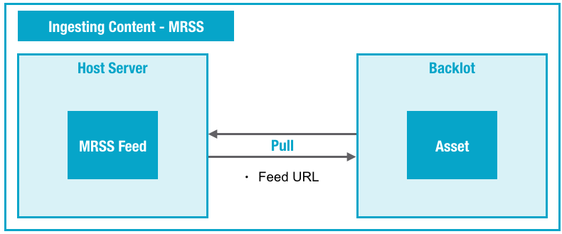

You can use Media RSS (MRSS) to have Ooyala pull your content from your own system
from an MRSS feed that you publish. Backlot pulls the metadata from the MRSS feed and either
creates a remote asset or downloads (from where they are hosted) and processes the videos and
any associated files (thumbnails, closed caption files, etc.).
Note: This topic applies to both OIS v2.5 and OIS v1. Certain sections, where
indicated, apply to just one version. OIS v1 has been
disabled. Customers using OIS v1 should switch to OIS v2.5.
Overview of MRSS Ingest

Using MRSS
To use MRSS, you host metadata and/or videos and other files
(thumbnails, closed captions) on a web server, and create an XML manifest file that
references that content.
Using MRSS to Pull Metadata Only
- Create an XML manifest file as described in XML Manifest File. You must use
the ooyala:remoteasset tag for metadata-only ingestion.
- Host the XML manifest file on one of the MRSS locations you provided. Make sure that
the filename and path matches exactly one of the paths you provided to Ooyala.
Using MRSS to Pull Videos, Thumbnails, and Closed Caption Files
- Host one or more files (videos, thumbnails, and closed caption files) on a web
server.
- Create an XML manifest file (see XML Manifest File). Make sure that the entries in the file reference the
files on your server. In particular, the value of the
<media:content> element's href
attribute must be an HTTP URL to the file on your server, as in the following
example:
<media:content url="http://mysite.com/upload/lacrosse_70.mov" />
- Host the XML manifest file on one of the MRSS locations you provided. Make sure that
the filename and path exactly matches one of the paths you provided to Ooyala.
Note:
Unfortunately, the concept of "client logging" does not apply to MRSS feed-based
processing. The best way to verify that your feed is processing successfully is to
check for the appearance of your assets, either with the Backlot UI or the Backlot
API /v2/assets request.
After the videos and any other associated files are processed, to pull more files, you
simply host another MRSS file in the agreed-upon location.
Validating MRSS Feeds
You can use the following feed
validator to validate the MRSS feeds you create:
Ooyala MRSS Feed Validator.
Validating Closed Captions
Use the
Ooyala Closed Captions Validator to check your DFXP/TTML documents for your convenience.
Note: We provide Ooyala-specific DFXP support. Even if you follow the w3c document
definition for DFXP/TTML, it may not be supported. If you run into any issues with your
DFXP/TTML files, contact your Ooyala support representative.